| 日付 | 2018年9月23日（日） - 2018年9月24日（月） | ||||
|---|---|---|---|---|---|
| 山域 | 東北の山 | ||||
| メンバー | 家族（妻、長女・7歳、長男・5歳） | ||||
| 山行形態 | 子連れ1泊2日キャンプ | ||||
| アクセス | 車 | ||||
| ルート (Map2) |
|
2日目
6時ごろに起床。朝食をとった後、子供たちは虫を捕まえて遊んでいる。
テントとフライシートの間に迷い込んだキリギリスをゲット。
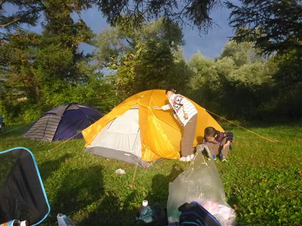
昨日はあまりキャンプ場を散策できなかったので、朝からぐるっと一周歩くことにする。
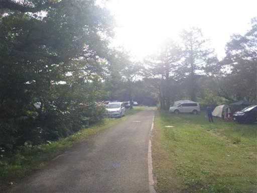
広大な敷地にたくさんのテントが設営されている。
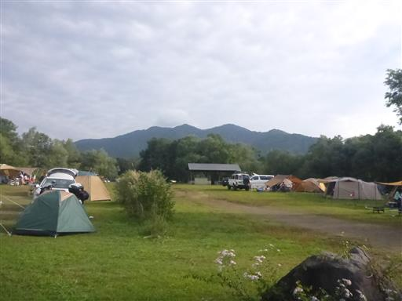
昨日登った磐梯山。
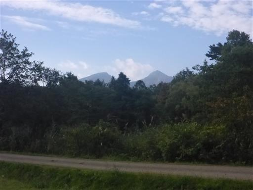
本日は午前中晴れそうなので、山に行くことにする。
昨日の磐梯山が大混雑だったので、人の少なそうな猫魔ヶ岳を選択。
再び八方台から登るのではつまらないので、雄国沼から登ることにする。
長いアプローチを終えて金沢峠駐車場に車を停める。標高1050m。
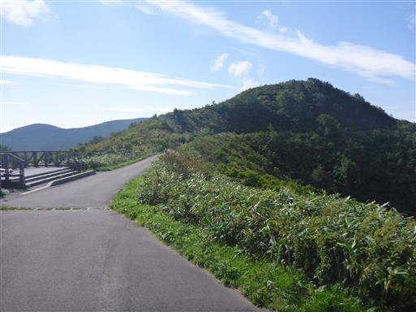
ここは猫魔火山の外輪山。外輪山に囲まれた中央のカルデラに雄国沼がある。
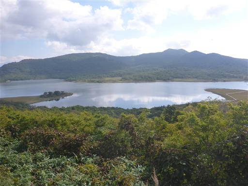
外輪山の外側には田園風景が広がる。
車でだいぶ標高の高いところまで登ってきたので展望が良い。
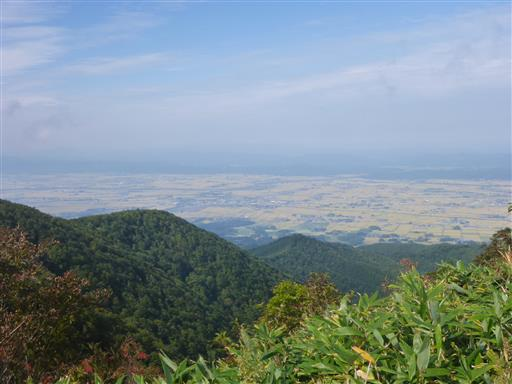
この辺りの登山道を整備しているというおじさんと少しお話しする。
ここの手摺りは雪の重みで壊れてしまったらしい。

雄国沼湿原を案内してもらう。木道が整備されていて、ぐるっと一周20～30分だ。
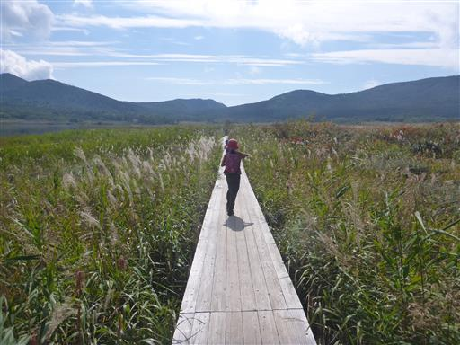
ここはニッコウキスゲの大群落が見られることで有名らしい。シカの食害はないそうだ。
花は咲いていないが、この季節も美しい景色が見られる。
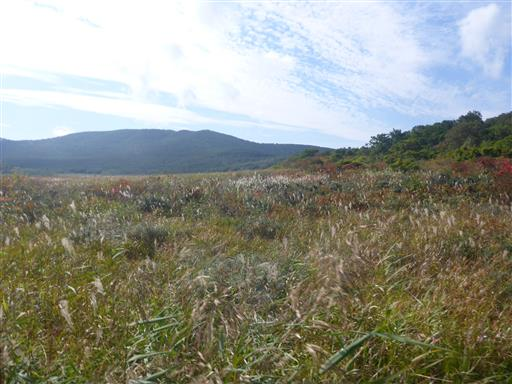
植物の名前を教えてもらう。
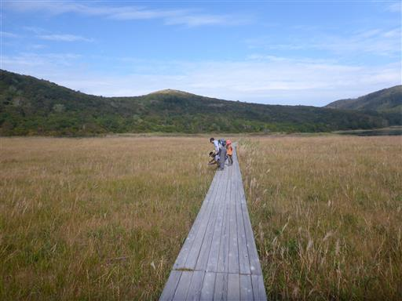
こちらはエゾリンドウ。他にもウメバチソウがところどころに咲いている。
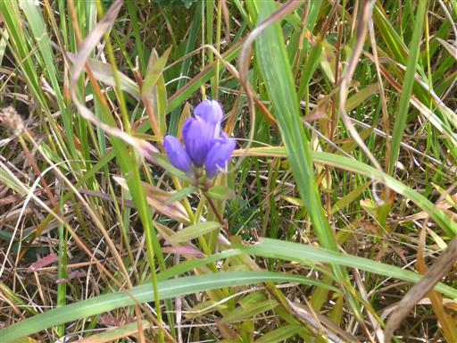
紅葉にはまだちょっと早いが色付き始めている。ススキとのコラボレーションが美しい。
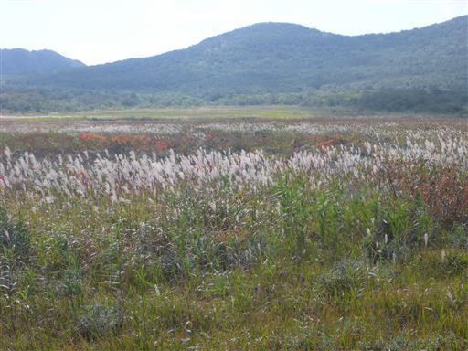
雄国沼を近くで眺める。周囲はほとんど人がおらず、非常に静かだ。
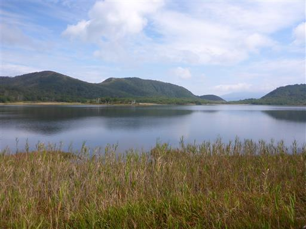
橋に到着。
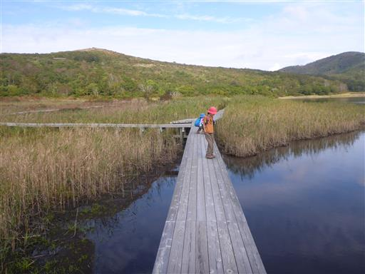
鯉がやって来る。餌付けをしているため、人が来ると寄って来るらしい。
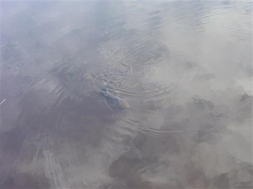
せんべいをちぎって鯉に与える。子供たちはこういうのが大好きだ。
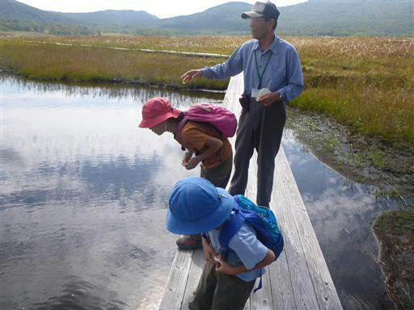
小さい魚もやって来て餌をつついているため、あちらこちらで波紋ができている。

おじさんにお礼を言って、雄国沼一周コースを歩き始める。
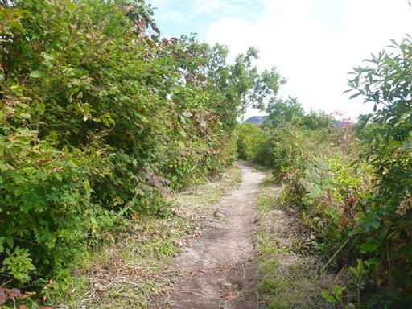
周囲は美しい森だ。コースからはあまり雄国沼が見えない。
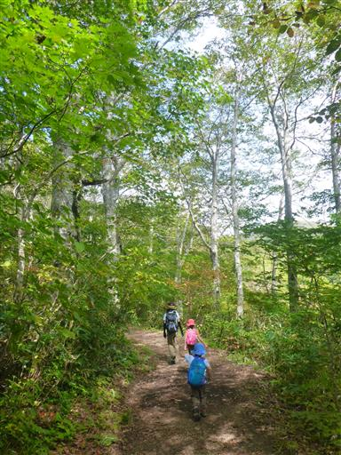
一本だけきれいに紅葉している木がある。
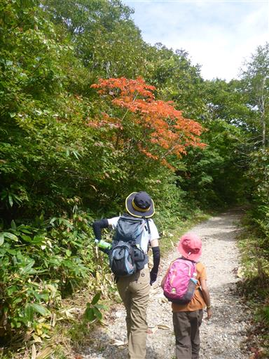
雄国休憩舎。ひとけのない場所に対して不釣り合いなほど立派な建物だ。
オンシーズンには賑わうのだろうか？
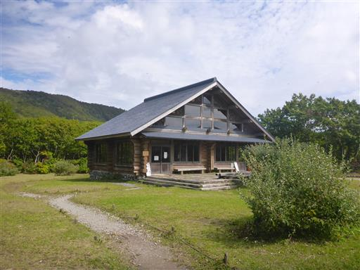
しばらく歩くと雄国沼の堤に到着。
江戸時代の灌漑工事により、雄国沼の面積が拡大したらしい。
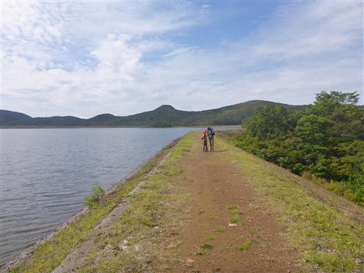
石の上を上手く渡るはずが、足を水の中に落としてしまう。
登山靴なので問題なし。
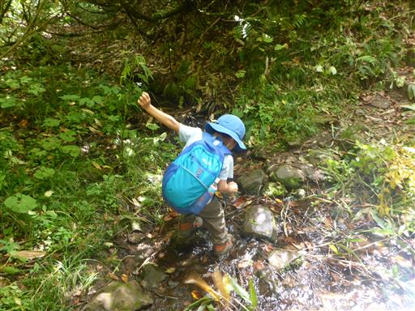
何本かの川が湖に注いでいる。
流域面積は小さいが、それなりに水が流れている。
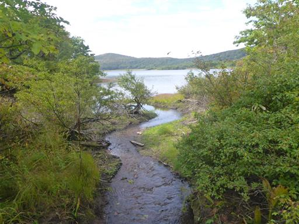
ブナの多い森。この辺りは秋っぽさを全く感じない。
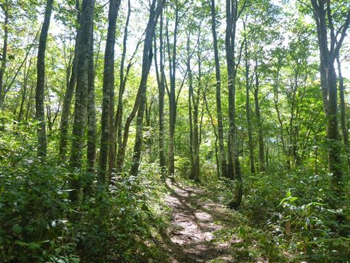
何度か沢の渡渉がある。
難易度は高くないが、息子は手を繋がないと少々厳しい。娘は問題なしだ。
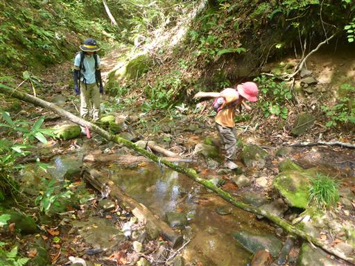
不思議な物体を発見。糸？に覆われたキノコ？
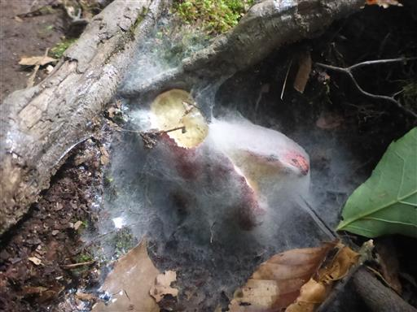
猫石に到着。娘はするすると岩を登って行く。
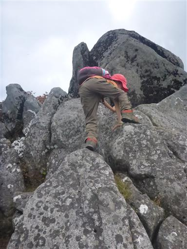
猫石から望む雄国沼。猫石直下は登り坂で、雄国沼を見渡せる位置まで登ってきた。
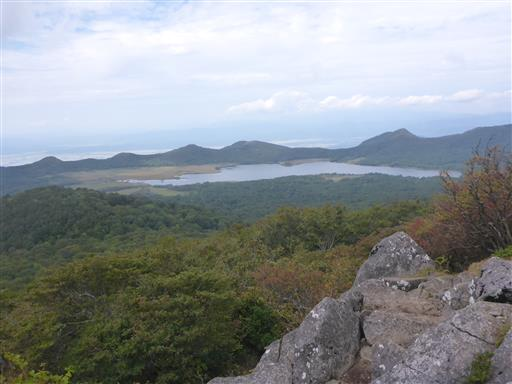
ここまで来ると外輪山の外側の猪苗代湖を望める。
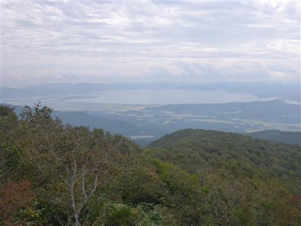
こちらは猫魔ヶ岳方面。猫魔火山の最高峰だ。
2日連続の山で子供たちのモチベーションが上がらないため、
ここからは一人で猫魔ヶ岳を往復することにする。
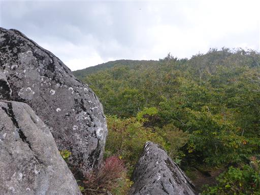
一旦下った鞍部に小さな池がある。
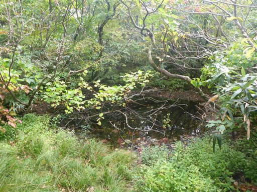
そこから階段を登っていく。一人だと速い。
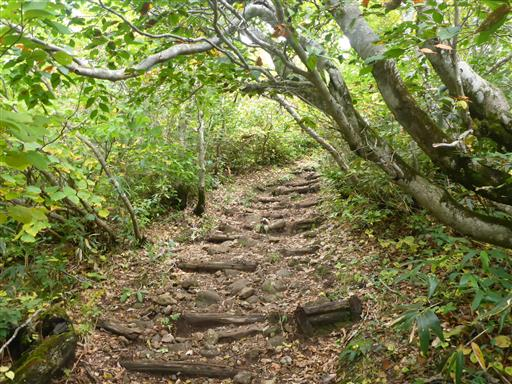
猫魔ヶ岳山頂に到着。一等三角点がある。
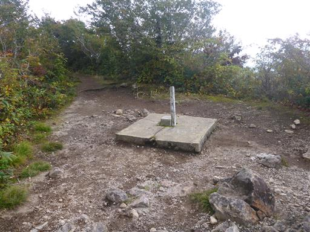
三角点から少し進んだところにある展望台。昨日登った磐梯山が目の前だ。
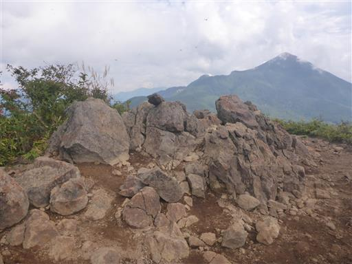
ここからは桧原湖も望める。
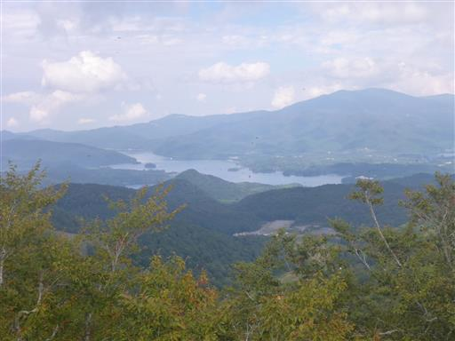
この辺りはトンボの数が多い。点々と無数のトンボが空を飛んでいる。
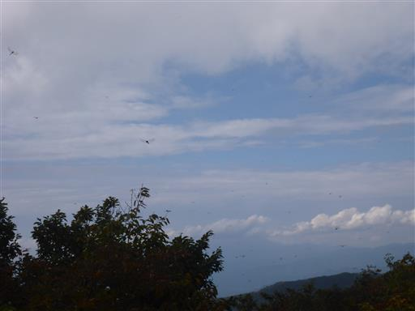
磐梯山には雲がかかり始めている。天気は下り坂だ。
山頂で仲良くなった人と話し込んでしまったが、家族を待たしているため駆け足で猫石に戻る。
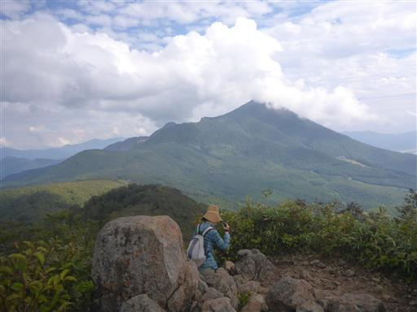
猫石に戻ったら、時間が押しているためすぐ出発。
右に見えるのは恐らくブナの木。
根元からこんなに枝分かれしているブナはあまり見かけない。
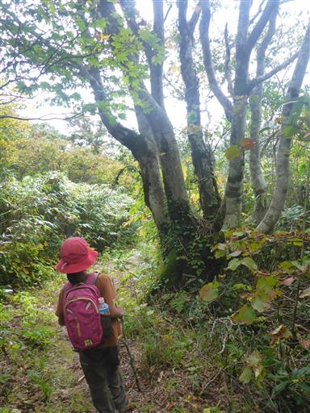
最近ストックを持ち始めたので、娘も真似して棒を持っている。
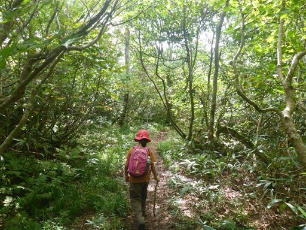
真っ黒なキノコ。ヌメッとしていて少々気持ち悪い。
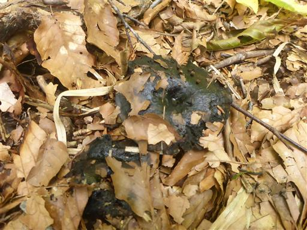
またまた現れた糸に覆われたキノコ。菌糸なのだろうか？
キノコの生態はよく分からない。
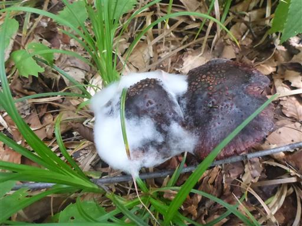
坂道を下ったらあとは平坦な道のダラダラ歩き。
子供が退屈しまくっているため、オオバコ相撲をしながら歩いていく。
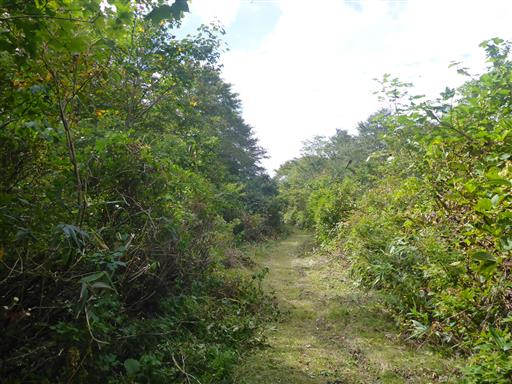
車道に到着。あともう少し。
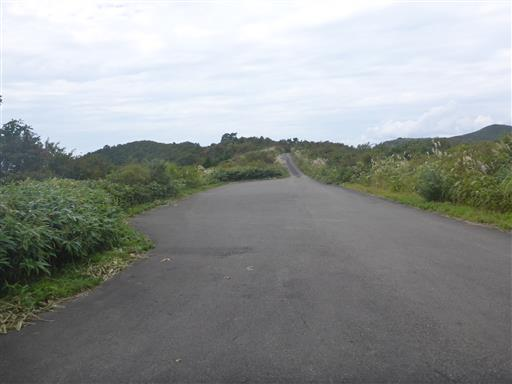
ところどころで景色が広がり、決して悪い道ではないのだが…
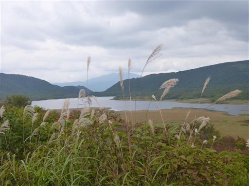
もう駄目…
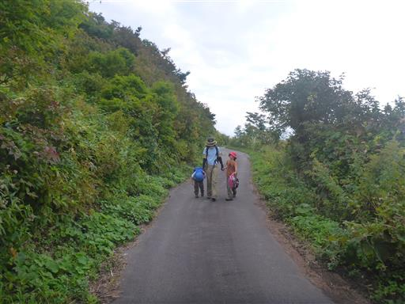
抱っこ…
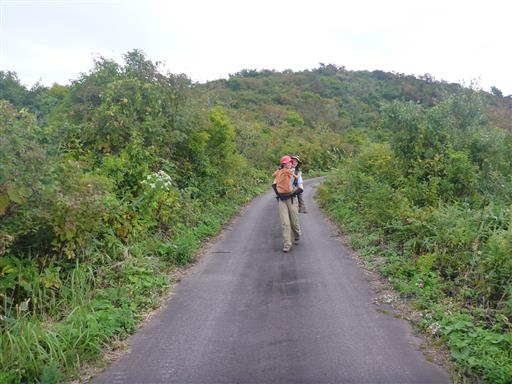
抱っこで元気を貰ったら最後はダッシュ。精神の問題だけで体力的には全然大丈夫。
最後にトイレに寄って帰宅する。
雄国沼と猫魔ヶ岳は昨日とは打って変わって静かな登山だった。
雄国沼湿原の木道は素晴らしい景色だったが、雄国沼を一周するコースは
少々変化に乏しく、子供たちは退屈してしまった。
1泊2日のキャンプ泊山行はひとまず成功したが、車にこれ以上荷物が入らないため、
キャンプでの食事を考えると何か対策が必要そうだ。
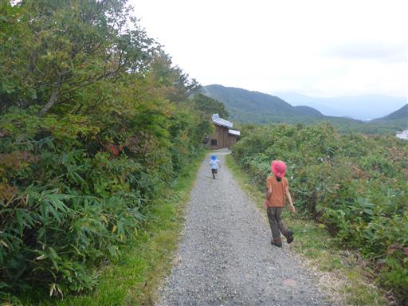